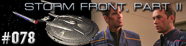
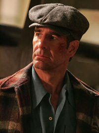
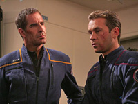
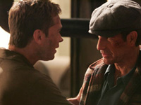
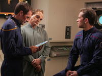

|
Enterprise
Temporada 3

Anlise do episdio por
Salvador Nogueira



|
MANCHETE
DO EPISDIO |
Reiniciamos a vista da Segunda Guerra Mundial alternativa assistindo um newsreel de propaganda alem, relatando a visita de Hitler aos EUA ocupado, e como ambas as naes estariam "trabalhando juntas pela liberdade", em uma relao que supostamente seria semelhante a da Alemanha com a Frana de Vichy, na verdadeira 2GM.
Aps o teaser, encontramos novamente Vosk deliberando com o General alemo na Casa Branca, onde o alemo exige mais esforo por parte do alien em se prepararem contra a ofensiva americana no front. Vosk responde de maneira mais rspida, bravateando sobre como suas prprias capacidades estarem muito alm das alems, ento no seu melhor interesse colaborar com o alien.
Entrementes, Alicia foi colocada em um alojamento vago, por ter pertencido a uma tripulante morta durante a crise Xindi, e Archer lhe faz uma visita. A moa est meio atrapalhada por ter que lidar com tanta informao e elementos do futuro, mas expressa seu desejo de voltar a NYC e tambm de ajudar a encontrar Trip e Maywheater. Ela tambm sugere apaixonadamente que Archer use a Enterprise para atacar Berlim e as foras alems, mas Archer a acalma dizendo que iro providenciar para que as coisas entrem nos eixos, mas de maneira apropriada.
Durante mais um teste do condute, que no sai exatamente como planejado, Vosk confabula com um de seus lugar-tenentes que o grupo de Archer, embora do futuro, no so necessariamente agentes temporais, mas que ainda assim a presena deles ali no deve ser coincidncia.

Uma vez l, Archer e dois MACO se encontram com Vosk, que desce de um caminho com alguns soldados o escoltando. Archer fala com Trip e Maywheater, e ordena a Enterprise os teleportar. Vosk questiona sobre a presena deles naquele tempo, e Archer confirma que sabe bem mais sobre Vosk do que o alien podia imaginar. Vosk argumenta que Archer s sabe de metade da histria, e que ele quem est sendo manipulado. Vosk diz que em troca do auxlio de Archer, que possui tecnologia superior a da dcada de 1940, pode mandar Archer e sua nave de volta ao sculo 22, e depois reverter os danos linha temporal terrquea que provocou, para Archer encontrar sua poca como deveria ser.
De volta a Enterprise, Trip e Maywheater contam a Archer o que encontraram na base de Vosk, e Archer diz que Daniels os mandou ali para impedir o alien de completar o trabalho no projeto do condute, mas durante a conversa, Trip ataca Archer, que estava preparado para isto depois de ter lido um PADD que Phlox havia passado para Archer momentos antes. "Trip" escapa da enfermaria, mas MACOs j estavam posicionados em corredores adjacentes a enfermaria, que o tonteiam. Archer descobre ento que se tratava de Silik.
No apartamento, Alicia trata os ferimentos na perna de Carl, que comenta rumores a respeito de Archer e ela terem desaparecido em pleno ar quando estavam para ser capturados. Ele tambm mostra que encontrou um treco quando procurava por um isqueiro, e Alicia diz que um rdio, o exigindo de volta. Alicia se mostra relutante a dizer mais do que sabe, mas acaba cedendo.
Archer questiona Silik na cela da Enterprise que o suliban est ali por causa dos dados no disco que Archer encontrou com ele, que contm detalhes das instalaes de Vosk. Archer especula que o Future Guy o enviou ali para roubar tecnologia de como efetivamente viajar no tempo, e que Silik voltaria para o sculo 22 a bordo da Enterprise, e que para o bem de Silik, bom que Trip esteja tambm bem e vivo.
Vosk questiona Archer que um disco de dados foi roubado, e Archer confirma que isto foi feito por um suliban. A espcie familiar a Vosk, e Archer nega tanto acesso ao suliban como ao disco. Ameaas so trocadas, e a Archer dizer que no aceita a proposta de Vosk, este dispara contra a Enterprise com um canho de plasma. Archer responde o fogo, e Maywheater coloca a nave em uma rbita fora do alcance da arma de Vosk. O alien no tem escolha a no ser ordenar a continuidade do trabalho sem a tecnologia extra, e Archer ordena mais reparos na Enterprise devido aos danos recebidos, enquanto estudam os dados roubados por Silik para descobrir fraquezas no escudo de Vosk. Archer volta a falar com Silik, e prope que ambos se juntem para invadirem a base de Vosk. Silik aceita, uma vez que tambm de seu interesse que Vosk seja derrotado.
Com diversas divises americanas cruzando o Rio Ohio e avanando front adentro, o General mais uma vez pressiona Vosk pelo equipamento que prometera. Vosk, secretamente contando que ir conseguir ativar o condute ainda nesta noite, assegura o General que este ir ter o equipamento dentro de seis horas, assim que for possvel o despacho ferrovirio do mesmo.
Enquanto avanam pela noite nas ruas escuras, Archer e Silik conversam a respeito de Vosk, e como este tambm j tentara antes erradicar os sulibans no passado, mas ele fracassara graas a agentes temporais Daniels e Silik realmente consideram Vosk um inimigo mais srio do que um ao outro. Por fim, Archer encontra membros da resistncia, incluindo Alicia, que iro colaborar com eles no raid que planejam contra Vosk. Carl se mostra meio relutante em ajudar Archer e Silik (disfarado de humano), mas Alicia pressiona o cidado para o convencer.

Enquanto tentam avanar pela base a procura de Trip, Silik consegue neutralizar alguns soldados alemes, mas acaba mortalmente ferido por um terceiro. Archer tenta contatar a Enterprise, mas com eles na atmosfera alta no consegue contato, e no h muito que fazer antes que Silik acabe morrendo. Trip, no sabendo ainda que Archer estava vivo, encontra Archer neste momento e o toma por Silik, mas Archer o convence ao mostrar Silik morto no cho. Archer e Trip escapam at as linhas da resistncia, e ordenam uma retirada.
Enquanto a Enterprise se posiciona para bombardear a base de Vosk, j com Archer e Trip a bordo, um numeroso esquadro de Ju 87 Stukas com armas de plasma engaja a nave, oferecendo razovel resistncia. Entrementes, Vosk e sua equipe conseguem estabilizar o condute, enquanto a Enterprise oferece combate aos Stukas nos cus de Manhattam. No que Vosk entrava no condute, Archer ordena abrir fogo contra a base dele, que completamente obliterada.
Neste ponto, Archer se v em uma espcie de corredor temporal, acompanhado de Daniels, que confirma que a linha do tempo est voltando ao completo normal. Archer contudo no demonstra muita pacincia com Daniels, mas este confirma que a Guerra Fria Temporal est chegando a um fim graas a Archer ter conseguido destruir Vosk ali. E depois de Daniels se despedir, Archer e sua tripulao se encontram em rbita da Terra, sendo recebidos por uma numerosa fora-tarefa de naves da Frota Estelar.
Comentrios:  
Quem diria? Jonathan Archer evita um nico ato de uma
das faces envolvidas na Guerra Fria Temporal no sculo 20 e
o fim desse conflito misterioso. S mesmo com Daniels nos
dizendo isso palavra por palavra para que admitamos para ns
mesmos que "Storm Front, Part II" o fim desse
conceito que foi originalmente apresentado como um dos pilares de Enterprise.
Desnecessrio dizer que, por mais estrago que Vosk e seus colegas
tenham feito na linha do tempo alternativa, em que tiveram sucesso
na implementao do condute temporal em 1944, difcil
engolir que sua morte, antes dos danos, pudesse catalisar a
pacificao de todas as (aparentemente) infinitas faces
envolvidas nesse conflito.
E a histria termina sem que saibamos qual a agenda do Future
Guy, dos Tholianos, dos agentes temporais para quem Daniels
trabalha etc. Temos apenas de aceitar que, com um grande tiroteio
entre gngsters e nazistas, Archer e sua trupe de astronautas
promovidos a policiais do tempo colocam um fim nessa maluquice
toda.
Assim como na primeira parte da histria, aqui tambm s se
pode elogiar o episdio na condio estrita de segmento de ao.
O segmento tem "timing" e traz elementos que agradam
esteticamente, como por exemplo mximo o vo da Enterprise sobre
Nova York, sendo combatida por avies, antes de explodir o condute
temporal de Vosk.
O que, mais uma vez, enfatiza a natureza de "Storm Front,
Part II". O nico real protagonista do segmento a
Guerra Fria Temporal. Quando seu principal "personagem"
no faz o menor sentido, fica difcil encontrar algo para
elogiar alm da mera formalidade de um bem-sucedido roteiro de ao.
Afora o ritmo impresso pela agitao e pelos tiros, h mais
buracos que um queijo suo. Se o ato primordial da Guerra
Temporal o sucesso de Vosk em 1944 (evitado por Archer nesta
linha temporal), como poderia j estar registrado na histria o
assassinado de Lnin, em 1916? Ou como toda a linha do tempo foi
restaurada, menos os eventos provenientes da Guerra Fria Temporal
"vividos" antes do sucesso de Vosk? Em suma, no tente
entender. No vale a pena. Aceite apenas que a quarta temporada
de Enterprise, zerando completamente o cronmetro, comea
mesmo a partir do prximo episdio.
Vamos?
Vosk - "I don't trust these
people. I never have, and I don't want to furnish them with weapons they
can turn against me."
("Eu no confio nestas pessoas. Nunca confiei, e eu no vou
lhes fornecer armamento que pode ser utilizado contra mim.")
Silik - "You've changed, Captain."
("Voc mudou, capito.")
Archer - "Yes I have, and not all for the better."
("Sim, eu mudei, e no todo para melhor.")
Archer - "I'm sick of your
damn Temporal Cold War! Just send us home!"
("Eu estou farto de sua droga de Guerra Fria Temporal! Apenas nos
mande para casa!")
 Em seu disfarce de "humano", John Fleck aparece durante parte
do episdio com sua face normal, sem a caracterstica maquilagem Suliban.
Em seu disfarce de "humano", John Fleck aparece durante parte
do episdio com sua face normal, sem a caracterstica maquilagem Suliban.
 Tanto nesta parte como na anterior, Christopher Neame interpreta um
General alemo sem ter sido referido nome. A equipe de produo
"escalou" apenas um General como suposto Comandante em Chefe
de toda a frente americana, estacionado com HQ na Casa Branca, embora to
vasto front pedira por um Marechal-de-Campo como Comandante em Chefe.
Tanto nesta parte como na anterior, Christopher Neame interpreta um
General alemo sem ter sido referido nome. A equipe de produo
"escalou" apenas um General como suposto Comandante em Chefe
de toda a frente americana, estacionado com HQ na Casa Branca, embora to
vasto front pedira por um Marechal-de-Campo como Comandante em Chefe.
Escrito por Manny Coto
Direo de David Straiton
Exibido em 15/10/2004
Produo: 078
Elenco:
Scott
Bakula como Jonathan Archer
Jolene Blalock como
T'Pol
John Billingsley
como Phlox
Anthony Montgomery
como Travis Mayweather
Connor Trinneer como
Charlie 'Trip' Tucker III
Dominic Keating como
Malcolm Reed
Linda Park como Hoshi Sato
Elenco convidado:
Golden
Brooks como Alicia
Jack Gwaltney como Vosk
John Fleck como Silik
Matt Winston como Daniels
Christopher Neame como general alemo
Steven R. Schirripa
como Carmine
Mark Elliot Silverberg
como Kraul
David Pease
como tcnico
aliengena
Burr Middleton
como narrador
do noticirio de cinema
Sinopse, trivias e ficha
tcnica por Leandro
M.Pinto